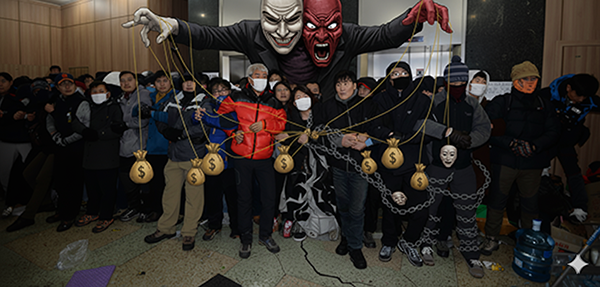
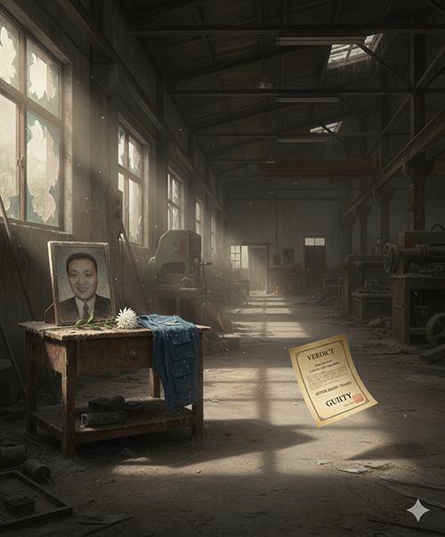
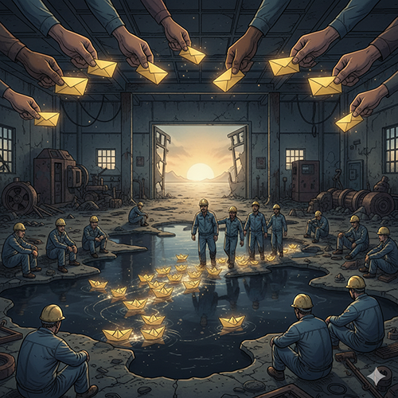

노동조합이라는 방패에 균열이 생기고 끝내 산산조각이 난다면 어떻게 되겠습니까? ‘설마 우리에게 그런 일이 생기겠어?’라고 안일하게 생각해서는 안 됩니다. 노동조합이 무너진 현장이 얼마나 처참하게 파괴될 수 있는지, 우리는 이 땅에서 벌어졌던 가장 극적인 두 개의 투쟁 사례를 통해 똑똑히 기억해야 합니다. 자동차 부품업체 ‘유성기업’과 ‘쌍용자동차’ 노동자들의 피눈물 어린 역사는 단순히 지나간 과거가 아닙니다. 그것은 우리가 단결을 잃었을 때 마주하게 될 미래의 모습이며, 우리가 왜 목숨을 걸고 투쟁의 끈을 놓아서는 안 되는지를 알려주는 가장 아픈 교과서입니다.
2011년, 충남 아산의 유성기업 노동자들은 밤샘 노동에서 벗어나 ‘인간다운 삶’을 살고 싶다는 소박한 요구를 걸고 ‘주간 연속 2교대제’ 도입을 위한 파업에 돌입했습니다. 그러나 회사는 대화 대신 용역 깡패를 동원한 폭력으로 화답했습니다. 이는 대한민국 노동운동사에 기록된 가장 잔혹하고 집요했던 ‘노조파괴 시나리오’의 서막이었습니다.
사측과 그 배후 자본, 그리고 노무법인은 마치 군사작전처럼 입체적인 공격을 감행했습니다. 핵심은 ‘분열’이었습니다. 사측에 우호적인 제2의 ‘어용노조’를 설립하고, 조합원들을 회유·협박하여 노조를 탈퇴하도록 종용했습니다. ‘금속노조에 있으면 불이익을, 어용노조로 옮기면 혜택을 주겠다’는 차별 정책으로 동지가 동지를 등지게 만들었습니다. 공장 안에는 용역 깡패들이 상주하며 조합원들을 상대로 상시적인 폭력을 일삼았고, 무더기 징계와 해고, 천문학적인 액수의 손해배상 소송으로 그들의 삶을 옭아맸습니다.
이 끔찍한 공격은 10년 넘게 이어졌고, 그 과정에서 한광호 열사를 비롯한 여러 동지들이 스스로 목숨을 끊는 비극이 발생했습니다. 2017년, 대법원은 마침내 유성기업 대표와 현대차 임원의 부당노동행위(노조파괴)에 대해 유죄를 확정했지만, 현장은 돌이킬 수 없을 만큼 황폐해진 뒤였습니다. 유성기업의 투쟁은 우리에게 묻고 있습니다. 단결이 무너지고 동료에 대한 신뢰가 깨졌을 때, 우리가 과연 무엇을 잃게 되는지를 생생하게 보지 않았느냐고 말입니다.
2009년, 쌍용자동차 노동자들은 회사의 일방적인 정리해고에 맞서 77일간 평택공장 옥쇄파업을 벌였습니다. ‘함께 살자’는 절규에 돌아온 것은 경찰특공대의 무자비한 폭력이었습니다. 특히 경찰 헬기를 동원해 최루액을 살포한 강경 진압은 큰 논란을 낳았습니다. 그러나 파업 현장의 물리적 폭력보다 더 잔인하게 노동자들의 삶을 파괴한 것은, 파업이 끝난 뒤에 날아온 거액의 손해배상 청구서였습니다.
‘손배가압류’라는 법의 칼날은 노동자의 정당한 쟁의권을 억압하는 가장 효과적인 ‘합법적’ 노조파괴 수단입니다. 회사는 파업에 참여한 노동자들의 월급과 집까지 가압류했고, 빚은 눈덩이처럼 불어났습니다. 파업 이후 서른 명에 이르는 해고 노동자와 그 가족들이 스스로 목숨을 끊거나 병으로 세상을 떠났다고 알려져 있습니다.
그러나 쌍용차 노동자들은 절망 속에서도 연대의 끈을 놓지 않았습니다. 끈질긴 법정 투쟁 끝에, 대법원은 경찰의 헬기 최루액 투하 등 진압 방식에 위법 소지가 있음을 지적하며 노동자들의 저항에 정당방위 여지를 일부 인정했고, 이를 근거로 국가와 회사의 손해배상 규모는 대폭 줄어들었습니다. 그들의 피눈물은 우리 사회에 거대한 공감대를 형성했고, 마침내 정당한 쟁의행위에 대한 무분별한 손배가압류를 제한하는 ‘노란봉투법’ 제정 운동으로 이어졌습니다.
유성기업과 쌍용차의 사례는 명확히 보여줍니다. 사측은 언제나 법과 제도를 이용하여 우리의 손발을 묶고, 엄청난 손실액을 들이밀며 우리를 위축시키려 할 것입니다. 우리의 투쟁은 불법이 아닙니다. 그것은 우리의 생존권과 존엄을 지키기 위한 최후의, 그리고 가장 정당한 저항입니다.
목차로 돌아가기